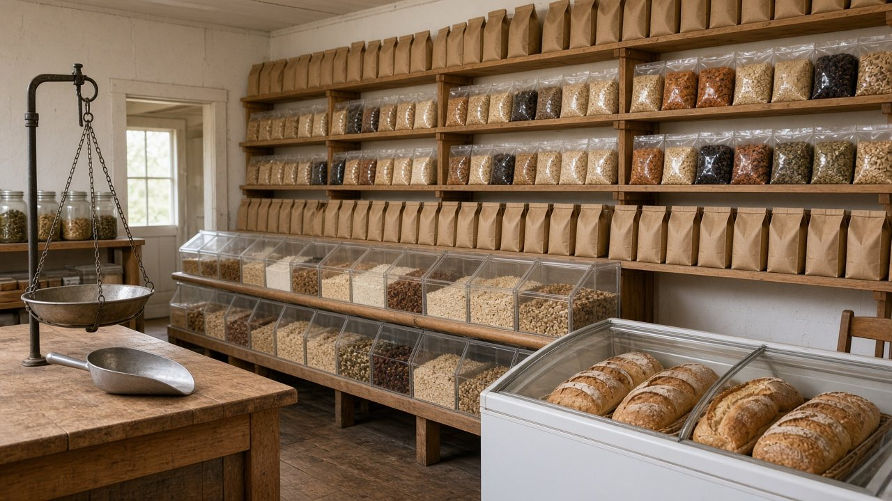

A small family run business that buys food in bulk and repackages it into smaller sizes: healthy cooking and baking staples, grains, dried fruits, seeds, teas, frozen breads, local beef and products from local businesses.

Sample photoHomestead buys products in bulk quantities and repackages them in smaller sizes.
“If we don’t carry a product we will try to assist our customers in procuring it.”
Item:
Size:
Name & contact:
“It is our desire to foster a love for food, cooking/baking, family and community. Most of all we want to glorify God through our business.”NEXTDOOR · OUR STORY
“They had everything I needed and the prices were excellent!”GOOGLE · OCT 2025
“This small friendly store is a great place to stock up on the staples of healthy cooking and baking. As a bonus, they also carry products from some of my favorite local businesses. Definitely worth a little country drive.”GOOGLE · MAY 2023
“Fantastic quality of product.They have canning lids!”GOOGLE · MAR 2022
4.9 on Google (20 reviews)
Please confirm the road name: Nextdoor lists County Road 20-2, and Google lists Township Rd 20-2 (Pettisville area).